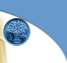

BẢNG TIN TRONG NGÀY
 |
Ngày 27/8/2007, Công ty Chứng khoán Sài Gòn Thương Tín (Sacombank Securities- SBS) chính thức “trình làng” cổng giao dịch trực tiếp, đây cũng chính là website mới của SBS... Homebank cập nhật: 27-08-2007 |
 |
CHỨNG KHOÁN NGÀY 24/8: LẠI VƯỢT 900 ĐIỂM Cổ phiếu đồng loạt tăng giá, đưa VN-Index có một phiên đảo chiều mạnh mẽ, vượt mốc 900 điểm... Homebank cập nhật: 24-08-2007 |
 |
CHỨNG KHOÁN NGÀY 21/8: TĂNG ĐỂ THĂM DÒ Thị trường có phiên thứ hai liên tiếp tăng điểm, nhưng ở mức nhẹ, thăm dò khả năng tái lập mốc 900 điểm... Homebank cập nhật: 22-08-2007 |